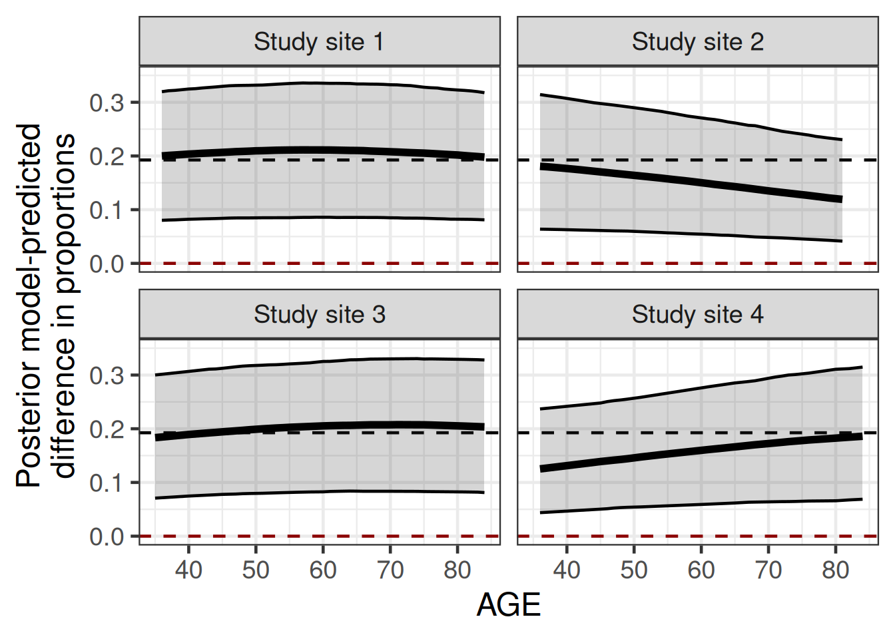
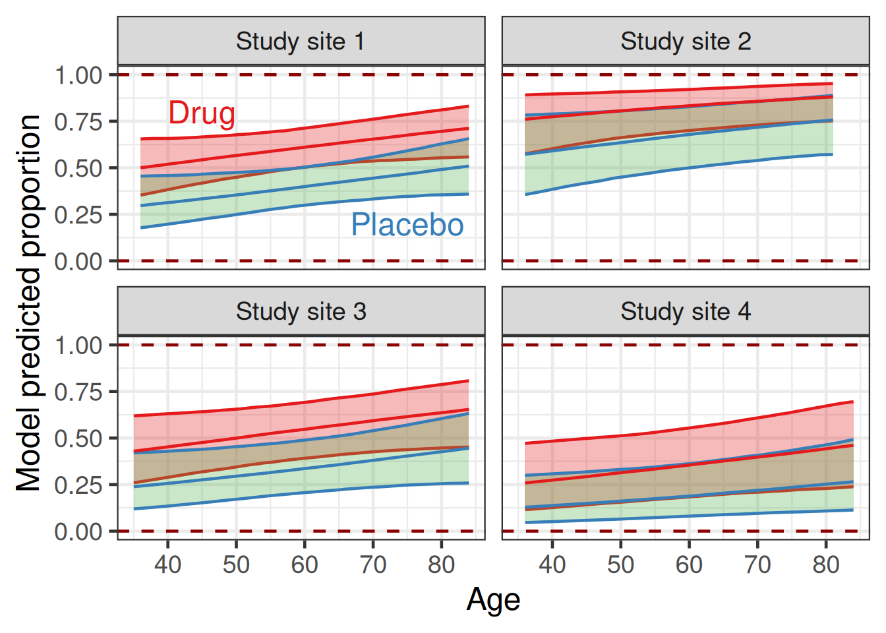
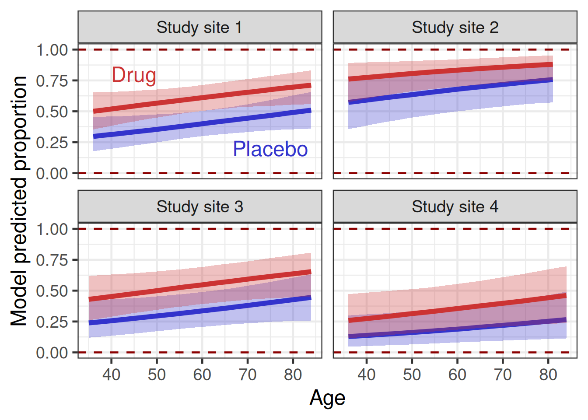

library(tidyverse)
library(brms)
library(posterior)
library(tidybayes)
library(gt)
library(here)
# instruct brms to use cmdstanr as backend and cache all Stan binaries
options(brms.backend="cmdstanr", cmdstanr_write_stan_file_dir=here("_brms-cache"))
# create cache directory if not yet available
dir.create(here("_brms-cache"), FALSE)
set.seed(678571)
# default controls args passed to Stan
control_args <- list(adapt_delta=0.99, step_size=0.1)
# nice common ggplot2 theme
theme_set(theme_bw(base_size=18))18 Difference in proportions from a fitted logistic regression
This case study features:
- how to obtain a difference between proportions after fitting a Bayesian logistic regression using the standardized estimator approach
- how to use sum-to-zero contrasts to express a-priori equal uncertainty about multiple factor levels
- that a normal prior distribution with a standard deviation of 3.14 for the intercept of a logistic regression is already very vague
- the use of
rvarsand the convenient helper functions such astidybayes::add_epred_rvars() - collapsability and transportability of effect measures, as well as population average and individual treatment effects
To run the R code of this section please ensure to load these libraries first:
18.1 Background
18.1.1 Different effect measures
Statisticians will often report results of an analysis in terms of the parameters of their analysis model, such as a (log-)odds ratio based on a logistic regression for a binary outcome. However, physicians or patients may struggle to understand these effect measures. They might instead prefer alternative effect measures such as a difference in proportion, the number of patients they need to treat with a drug (instead of with placebo) before we expect “it to make a difference for one of the patients” (aka “number needed to treat” or NNT) or the ratio of proportions (risk-ratio).
Even once we have chosen an effect measure, another question is whether we want it in its marginal (population-average) or conditional (patient-specific) form. Additionally, different effect measures may have other desirable properties such as collapsability and transportability.
18.1.2 Marginal (population-average) or conditional (patient-specific)
A patient (and their physician) will usually be interested in how much a treatment will help them (“How much would taking the drug reduced my risk of being hospitalized in the next year?”) taking their specific situation into account. This is the conditional (on patient covariates) or patient-specific question.
In contrast, an insurance company or state healthcare system might be more interested in the effect an intervention has on a population level (“How much would giving the drug to all eligible patients reduce the number of hospitalizations in the next year?”). This is a marginal or population-average effect question.
The difference between conditional and marginal estimates is not whether they come from a covariate adjusted model. Marginal estimates can still be obtained (with gain in precision) from covariate adjusted analyses.
Even when a treatment actually has the same causal effect for all patients, the population-average effect may not be the same as the patient specific effect. In general, we call an effect measure collapsible when the population-average effect is the average of the effects for the members of the population. In contrast, an effect measure, for which this is not the case is non-collapsible.
The difference in proportions is a collapsible effect measure. I.e. the marginal (population average) difference in proportions is the mean of the difference in proportions across the individuals in the population. This also means that, if the modelled difference in proportions is the same for all patients, then the marginal difference in proportions is the same as for each patient.
However, mathematically, a difference in proportions cannot be constant over differing control group proportions. It may just not vary to a degree we consider practically relevant. The difference in proportion for one patient will not generally be the same as for another patient and there may be no patient for whom the marginal difference in proportion applies (it is simply an average across patients). Thus, the marginal difference in proportions will differ for two populations with different covariate distributions. For that reason Harrell has discussed that the marginal difference in proportions is not a transportable effect measure, while the odds ratio might be transportable (but is non-collapsible).
I.e. a marginal difference in proportions for a drug compared with placebo from a clinical trial may not be a good summary of what will happen in clinical practice, because the distribution of characteristics of trial participants will rarely exactly match the distribution of the real-world patient population for the drug.
The FDA guidance illustrates the difference between the odds ratio and the difference in proportions. This example illustrates the non-collapsibility of the odds ratio in a hypothetical target population (the marginal odds ratio is lower than the odds ratio for both subgroups) and the collapsibility of the difference in proportions (the marginal difference in proportions is exactly the weighted average of the subgroup differences weighted by the percentage of the target population in the subgroup).
| Population | Percentage of target population | Success rate New drug | Success rate Placebo | Odds ratio | Difference in proportions |
| Biomarkerpositive | 50% | 80.0% | 33.3% | 8.0 | 46.7% |
| Biomarkernegative | 50% | 25.0% | 4.0% | 8.0 | 21.0% |
| Combined | 100% | 52.5% | 18.7% | 4.8 | 33.8% |
In this example, an conditional (on covariates) odds ratio of 8.0 applies to all patients and would be a reasonable patient-specific effect measure.
For a population with 50% biomarker-positive and 50% biomarker-negative patients a difference of proportion of 33.8% is the correct marginal (population-average) difference in proportions. However, this marginal effect applies to no patient (the difference in proportions for a patient is either 46.7% or 21.0% depending on the subgroup the patient is in). It also changes when we look at a population with, say, 80% biomarker-negative patients, then the marginal difference becomes 26.1%. If the data above have arisen from a clinical trial, in which the equal size of the biomarker-positive and -negative subgroups was solely an effect of ensuring equal enrolment in both subgroups, then it seems hard to justify why the equal weighting of the subgroup-specific differences in proportions is relevant to clinical practice. It is, of course, possible to adjust a difference in proportions to a known covariate distribution for a population of interest.
18.1.3 Marginal difference in proportions based on a covariate-adjusted Bayesian analysis
In this case study, we illustrate how to obtain a marginal difference in proportions based on a covariate-adjusted Bayesian analysis, as well as from one not adjusted for covariates. The same approach can also be used for e.g. the ratio of proportions, the difference in exponential hazard rates or the difference in the proportion of patients with an event after 1-year based on a survival model, or the difference in the proportion of patients achieving blood pressure control based on a linear regression.
18.2 Example data
The example concerns a hypothetical Phase IIA randomized controlled trial (RCT) conducted in four clinical trial sites. The RCT compared a new drug with placebo in terms of the proportion of patients with a disease achieving levels of a blood biomarker above the lower limit of normal for a healthy population. Younger patients are more likely to have a faster progressing and more aggressive form of the disease, so they are expected to be less likely to achieve this.
Example data
logit <- qlogis
inv_logit = plogis
trial_data <- tibble(
USUBJID = 1:250,
TRT01P = c(
1L, 1L, 1L, 1L, 0L, 1L, 0L, 0L, 0L, 1L, 1L, 1L, 1L, 0L, 1L, 1L,
1L, 0L, 1L, 1L, 1L, 1L, 1L, 1L, 1L, 1L, 0L, 1L, 1L, 1L, 0L, 1L,
0L, 0L, 0L, 1L, 0L, 1L, 1L, 0L, 1L, 0L, 1L, 1L, 1L, 0L, 0L, 0L,
0L, 1L, 1L, 1L, 1L, 1L, 0L, 1L, 0L, 0L, 1L, 0L, 1L, 1L, 0L, 1L,
0L, 0L, 1L, 0L, 0L, 1L, 1L, 0L, 0L, 0L, 1L, 1L, 1L, 0L, 1L, 0L,
0L, 1L, 0L, 1L, 0L, 1L, 0L, 1L, 1L, 0L, 0L, 0L, 0L, 1L, 0L, 1L,
1L, 0L, 1L, 1L, 1L, 0L, 0L, 0L, 0L, 1L, 0L, 1L, 0L, 0L, 0L, 1L,
1L, 1L, 1L, 0L, 1L, 0L, 1L, 0L, 0L, 1L, 1L, 0L, 1L, 0L, 1L, 1L,
1L, 1L, 0L, 0L, 1L, 0L, 0L, 1L, 1L, 1L, 1L, 1L, 0L, 1L, 0L, 1L,
1L, 0L, 1L, 1L, 0L, 1L, 1L, 1L, 0L, 0L, 0L, 0L, 1L, 1L, 1L, 0L,
0L, 0L, 0L, 1L, 1L, 1L, 1L, 1L, 0L, 1L, 1L, 0L, 0L, 0L, 0L, 1L,
1L, 0L, 1L, 0L, 0L, 0L, 0L, 0L, 1L, 1L, 0L, 1L, 0L, 1L, 1L, 1L,
0L, 1L, 1L, 0L, 1L, 0L, 0L, 0L, 1L, 0L, 1L, 0L, 0L, 0L, 1L, 1L,
1L, 0L, 1L, 0L, 1L, 0L, 0L, 0L, 1L, 0L, 0L, 0L, 1L, 1L, 1L, 0L,
0L, 0L, 0L, 1L, 0L, 1L, 1L, 0L, 0L, 0L, 0L, 1L, 0L, 1L, 1L, 1L,
0L, 1L, 0L, 0L, 1L, 0L, 1L, 0L, 1L, 1L
),
AGE = c(
77L, 49L, 51L, 77L, 73L, 76L, 58L, 77L, 69L, 52L, 45L, 67L, 42L,
42L, 56L, 76L, 71L, 46L, 76L, 54L, 67L, 40L, 37L, 70L, 70L, 45L,
69L, 67L, 63L, 35L, 64L, 62L, 78L, 53L, 44L, 55L, 47L, 46L, 63L,
65L, 67L, 79L, 44L, 56L, 47L, 61L, 74L, 52L, 57L, 65L, 36L, 58L,
72L, 59L, 48L, 72L, 71L, 45L, 66L, 80L, 62L, 75L, 67L, 67L, 66L,
49L, 72L, 55L, 44L, 68L, 77L, 59L, 84L, 78L, 77L, 71L, 36L, 72L,
36L, 39L, 57L, 79L, 71L, 43L, 61L, 72L, 49L, 56L, 54L, 75L, 68L,
45L, 58L, 46L, 39L, 65L, 73L, 72L, 71L, 49L, 65L, 70L, 57L, 47L,
62L, 36L, 76L, 70L, 84L, 54L, 76L, 36L, 51L, 38L, 56L, 44L, 58L,
53L, 47L, 80L, 75L, 47L, 61L, 57L, 49L, 64L, 53L, 44L, 47L, 67L,
40L, 56L, 69L, 81L, 67L, 83L, 84L, 81L, 81L, 55L, 38L, 48L, 61L,
80L, 51L, 76L, 82L, 61L, 44L, 51L, 48L, 72L, 56L, 49L, 73L, 71L,
61L, 72L, 47L, 45L, 42L, 82L, 84L, 50L, 46L, 57L, 66L, 49L, 74L,
70L, 47L, 48L, 75L, 53L, 67L, 38L, 58L, 48L, 65L, 44L, 47L, 47L,
61L, 76L, 77L, 49L, 81L, 77L, 70L, 61L, 83L, 48L, 48L, 52L, 56L,
74L, 47L, 54L, 65L, 45L, 37L, 65L, 77L, 44L, 76L, 52L, 60L, 37L,
38L, 65L, 81L, 55L, 68L, 49L, 84L, 81L, 72L, 74L, 62L, 75L, 53L,
58L, 64L, 57L, 61L, 74L, 64L, 46L, 37L, 81L, 83L, 65L, 69L, 54L,
77L, 73L, 38L, 47L, 50L, 65L, 83L, 45L, 55L, 70L, 49L, 63L, 64L,
52L, 41L, 36L
),
SITEID = c(
1L, 1L, 3L, 2L, 1L, 3L, 1L, 1L, 1L, 1L, 3L, 2L, 2L, 1L, 3L, 1L,
1L, 1L, 1L, 4L, 4L, 3L, 4L, 2L, 1L, 3L, 1L, 3L, 3L, 3L, 3L, 1L,
1L, 1L, 1L, 3L, 1L, 1L, 2L, 1L, 1L, 1L, 1L, 2L, 1L, 1L, 4L, 1L,
1L, 3L, 2L, 1L, 4L, 1L, 3L, 2L, 1L, 4L, 1L, 4L, 1L, 3L, 2L, 3L,
1L, 3L, 4L, 2L, 1L, 2L, 1L, 1L, 3L, 1L, 1L, 4L, 1L, 1L, 1L, 2L,
1L, 2L, 1L, 3L, 2L, 1L, 1L, 1L, 2L, 1L, 1L, 4L, 3L, 4L, 2L, 1L,
1L, 1L, 3L, 1L, 1L, 2L, 1L, 4L, 1L, 1L, 4L, 2L, 1L, 2L, 1L, 4L,
1L, 1L, 3L, 1L, 2L, 1L, 2L, 1L, 1L, 1L, 2L, 1L, 1L, 1L, 1L, 1L,
1L, 1L, 1L, 2L, 1L, 3L, 3L, 1L, 1L, 1L, 1L, 3L, 1L, 3L, 3L, 4L,
4L, 1L, 1L, 1L, 1L, 1L, 4L, 1L, 2L, 1L, 4L, 1L, 1L, 4L, 1L, 1L,
1L, 4L, 4L, 1L, 1L, 1L, 3L, 2L, 1L, 2L, 4L, 4L, 1L, 1L, 1L, 1L,
3L, 1L, 1L, 3L, 1L, 3L, 3L, 2L, 1L, 2L, 1L, 2L, 3L, 4L, 1L, 3L,
1L, 3L, 1L, 3L, 1L, 3L, 4L, 3L, 2L, 1L, 2L, 2L, 2L, 1L, 3L, 1L,
1L, 1L, 3L, 1L, 4L, 1L, 1L, 1L, 1L, 3L, 2L, 1L, 3L, 1L, 2L, 1L,
3L, 1L, 3L, 1L, 1L, 2L, 1L, 2L, 1L, 2L, 1L, 1L, 1L, 3L, 1L, 1L,
3L, 1L, 3L, 1L, 4L, 3L, 1L, 1L, 1L, 2L
),
AVAL = c(
1L, 1L, 0L, 1L, 0L, 1L, 0L, 1L, 0L, 1L, 0L, 1L, 1L, 1L, 0L, 0L,
1L, 1L, 0L, 0L, 1L, 1L, 0L, 1L, 1L, 0L, 0L, 0L, 0L, 1L, 1L, 0L,
1L, 1L, 1L, 1L, 0L, 0L, 1L, 0L, 0L, 1L, 1L, 1L, 1L, 0L, 0L, 1L,
0L, 0L, 1L, 1L, 1L, 0L, 1L, 1L, 1L, 0L, 1L, 0L, 1L, 1L, 1L, 1L,
0L, 0L, 1L, 1L, 0L, 1L, 1L, 0L, 1L, 1L, 1L, 0L, 1L, 0L, 0L, 1L,
1L, 0L, 1L, 0L, 1L, 1L, 1L, 1L, 1L, 0L, 1L, 0L, 0L, 0L, 0L, 1L,
1L, 0L, 1L, 0L, 0L, 0L, 0L, 0L, 0L, 1L, 0L, 1L, 1L, 0L, 0L, 0L,
1L, 0L, 1L, 0L, 1L, 0L, 1L, 0L, 0L, 0L, 0L, 0L, 0L, 1L, 0L, 1L,
1L, 1L, 0L, 0L, 0L, 1L, 0L, 0L, 0L, 1L, 0L, 1L, 0L, 1L, 0L, 1L,
1L, 1L, 1L, 1L, 0L, 1L, 0L, 1L, 1L, 1L, 0L, 1L, 1L, 1L, 0L, 0L,
1L, 0L, 1L, 0L, 1L, 0L, 0L, 1L, 0L, 0L, 0L, 0L, 0L, 0L, 1L, 1L,
0L, 0L, 0L, 0L, 1L, 0L, 1L, 1L, 1L, 1L, 1L, 1L, 0L, 0L, 0L, 1L,
0L, 1L, 1L, 1L, 0L, 0L, 0L, 0L, 1L, 1L, 1L, 0L, 1L, 1L, 1L, 1L,
0L, 1L, 1L, 0L, 0L, 1L, 0L, 1L, 0L, 0L, 1L, 0L, 0L, 1L, 0L, 0L,
0L, 1L, 1L, 1L, 0L, 1L, 1L, 1L, 0L, 1L, 0L, 1L, 0L, 0L, 1L, 0L,
0L, 0L, 0L, 0L, 1L, 0L, 1L, 1L, 0L, 1L
)
) |>
mutate(SITEID=factor(SITEID, levels=1L:4L,
labels=paste0("Study site ", 1:4)),
TRT01P=factor(TRT01P, levels=0L:1L,
labels=c("Placebo", "Drug")),
sAGE = scale(AGE))
trial_data |>
group_by(SITEID, TRT01P) |>
summarize(Responders = sum(AVAL),
n=n(),
Proportion = Responders/n,
`Mean age` = mean(AGE),
`SD age` = sd(AGE),
.groups="drop") |>
gt() |>
fmt_number(columns=c("Mean age", "SD age"), decimals=1) |>
fmt_number(columns=Proportion, decimals=2)| SITEID | TRT01P | Responders | n | Proportion | Mean age | SD age |
|---|---|---|---|---|---|---|
| Study site 1 | Placebo | 30 | 70 | 0.43 | 61.5 | 13.4 |
| Study site 1 | Drug | 39 | 67 | 0.58 | 59.4 | 14.4 |
| Study site 2 | Placebo | 10 | 15 | 0.67 | 58.3 | 11.7 |
| Study site 2 | Drug | 20 | 24 | 0.83 | 60.8 | 14.3 |
| Study site 3 | Placebo | 7 | 21 | 0.33 | 62.2 | 12.3 |
| Study site 3 | Drug | 14 | 26 | 0.54 | 56.8 | 11.8 |
| Study site 4 | Placebo | 1 | 11 | 0.09 | 65.4 | 16.0 |
| Study site 4 | Drug | 7 | 16 | 0.44 | 58.2 | 13.8 |
18.3 Model
18.3.1 Details of approach
We are interested in comparing the two treatment groups in the RCT in terms of the marginal (population average) difference in the proportion of patients achieving the “responder” definition for each treatment.
Obtaining pseudo-random samples from the posterior distribution for a difference in proportions after fitting a Bayesian logistic regression in brms is particularly straightforward, if our model only includes treatment. In that case, we simply get posterior MCMC samples for the logit for the treatment and the control group, convert these to probabilities and form the difference per MCMC sample to obtain MCMC samples for the difference in proportions. Unlike with some frequentist methods, the properties of transformed MCMC samples mean that these samples will automatically obey logical constraints (e.g. each proportion must lie in [0, 1], the control group proportion plus the difference in proportions must also result in a proportion for the treatment group in [0, 1] etc.). This makes it extremely simple to obtain a valid point estimate with a sensible credible interval.
Things become a little bit more complicated, if there are further terms in the model, in the case of our example age and clinical trial site ID. We might include these terms in our model, because randomization was stratified by trial site (“analyze as you randomize”) and age is a known important predictor of response in this disease.
We now illustrate how we obtain a “standardized” estimator for the marginal (population average or “unconditional”) difference in proportions using the approach discussed by the FDA guidance on adjusting for covariates in randomized clinical trials for drugs and biological products (see also (Moore and Laan 2009) and (Steingrimsson, Hanley, and Rosenblum 2017)). The only thing we do differently compared to the mentioned papers is that instead of using a logistic regression model fit with maximum likelihood, we use a Bayesian logistic regression.
In the Bayesian framework the key steps for obtaining the “standardized” estimator of a difference in proportions for a RCT are particularly easy:
- Fit a model (here a Bayesian logistic regression) to the RCT data.
- Predict the outcomes for each patient under treatment and control (here we obtain pseudo-random samples for the posterior predicted logit-probability for each patient).
- Calculate the metric of interest for each patient for each MCMC sample (here we apply the inverse-logit transformation to the logit-probabilities and form the difference between the treatment and control ones making sure to match the same indices so the same underlying set of underlying MCMC samples of model parameters are used for the treatment and control prediction of each patient).
- Form the mean across patients.
- Summarize the resulting MCMC samples for the posterior for the difference in proportions.
18.3.2 Model structure
We choose a relatively simple (Bayesian) logistic regression model including an intercept, treatment, site as a fixed effect, and age as a covariate. We use a centered and scaled version of age to make it easier to reason about priors, because firstly the intercept and site effects now refer to a patient with an average age for the study, and secondly the age coefficient now describes the change in the logit with every standard deviation (in the study population) of age. For full control over the design matrix, we disable the default automatic centering of the design matrix with the center=FALSE option here.
brms_model1 <- bf(
AVAL ~ 1 + SITEID + sAGE + TRT01P,
family = bernoulli(link = "logit"),
center = FALSE
)Note that the model used in Step 1 of the procedure for obtaining a “standardized” estimator in the previous subsection could include a treatment by baseline covariate interaction. Including such an interaction makes sense when (we suspect that) the log-odds-ratio between treatment and control is not constant across all observed baseline covariate values.
Like for the centered and scaled version of age, we want the intercept term to not to refer to a reference SITEID. Thus, the use sum-to-zero contrasts for the SITEID factor variable, which means that there is a separate coefficient for each factor-level of SITEID, but they sum to zero (otherwise the model would be overparameterized). Sum-to-zero contrasts also mean that we express a-priori equal uncertainty about the probability for each trial site, while with a reference category we have less prior uncertainty about the reference category and more uncertainty about the other categories. With the vague priors we use in this case study, this consideration may be of minor relevance, but in other cases it may be more important.
contrasts(trial_data$SITEID) <- contr.sum(
n = length(unique(trial_data$SITEID)),
contrasts = TRUE
)18.3.3 Choice of prior distributions
We use a weakly informative prior for the regression coefficients.
For the intercept of the model we use a normal distribution that (on the logit-scale) approximates a vague Beta(0.5, 0.5) prior distribution for a single proportion.
The table below shows what normal and Student-t distributions match the moments (mean, variance and - for the Student-t distribution - excess kurtosis) of the distribution of logit-probabilities for three commonly used vague Beta prior distributions for proportions.
Beta prior approximations
# Functions to deal with finding appropriate logit-normal SD
# ---------------------
# Density of logit-normal distribution
# (see https://en.wikipedia.org/wiki/Logit-normal_distribution)
dlogitnorm <- function(x, mu = 0, sigma = 1, log = FALSE) {
tmp_ <- -log(sigma) -
0.5 * log(2 * pi) -
(qlogis(x) - mu)^2 / 2 / sigma^2 -
log(x) -
log1p(-x)
if (log) tmp_ else exp(tmp_)
}
# Variance of logit-normal distribution (only for mu=0)
vlogitnorm <- function(mu = 0, sigma = 1) {
if (mu == 0 & length(sigma) == 1) {
integrate(
f = \(x) (plogis(x) - 0.5)^2 * dnorm(x, 0, sigma),
lower = -Inf,
upper = Inf
)$value
} else if (mu == 0 & length(sigma) > 1) {
sapply(sigma, FUN = \(y) {
integrate(
f = \(x) (plogis(x) - 0.5)^2 * dnorm(x, 0, y),
lower = 0,
upper = 1
)$value
})
} else {
stop("vlogitnorm does not deal with mu neq 0")
}
}
# Variance of the beta distribution
vbeta <- function(shape1 = 1, shape2 = 1) {
shape1 * shape2 / (shape1 + shape2)^2 / (shape1 + shape2 + 1)
}
#vbeta(shape1=0.5, shape2=0.5)
# Find SD of the logit-normal to match a particular beta-distribution
find_logitnorm_sd <- function(shape1 = 0.5, shape2 = 0.5) {
if (all(shape1 != shape2)) {
stop("Cannot deal with unequal shape parameters")
} else if (length(shape1) == 1L && length(shape2) == 1L) {
ucminf::ucminf(par = log(3.14), fn = \(x) {
(vbeta(shape1 = shape1, shape2 = shape2) - vlogitnorm(sigma = exp(x)))^2
})$par |>
exp()
} else if (length(shape1) == length(shape2)) {
map2_dbl(shape1, shape2, \(s1, s2) {
ucminf::ucminf(par = log(3.14), fn = \(x) {
(vbeta(shape1 = s1, shape2 = s2) - vlogitnorm(sigma = exp(x)))^2
})$par |>
exp()
})
}
}
tibble(alpha = c(1.0 / 3.0, 0.5, 1.0), beta = c(1.0 / 3.0, 0.5, 1.0)) |>
mutate(
`Prior distribution for proportion` = paste0(
"Beta(",
round(alpha, 2),
", ",
round(beta, 2),
")"
),
scale = sqrt(trigamma(alpha) + trigamma(beta)),
`Normal(mean, SD) matched on logit-scale` = paste0(
"N(0, ",
round(scale, 2),
")"
),
scale2 = find_logitnorm_sd(alpha, beta),
`Normal(mean, SD) matched on probability scale` = paste0(
"N(0, ",
round(scale2, 2),
")"
),
nu = round(
4 +
6 *
(trigamma(alpha) + trigamma(beta))^2 /
(psigamma(alpha, 3) + psigamma(beta, 3)),
1
),
`Student-t(DF, location, scale) matched on logit-scale` = paste0(
"T(",
nu,
", ",
0,
", ",
round(scale * sqrt((nu - 2) / nu), 2),
")"
)
) |>
dplyr::select(
`Prior distribution for proportion`,
starts_with("Normal"),
`Student-t(DF, location, scale) matched on logit-scale`
) |>
gt() |>
tab_spanner(
label = "Prior distribution for intercept on logit scale (moment matching)",
columns = c(
"Normal(mean, SD) matched on logit-scale",
"Normal(mean, SD) matched on probability scale",
"Student-t(DF, location, scale) matched on logit-scale"
)
)| Prior distribution for proportion |
Prior distribution for intercept on logit scale (moment matching)
|
||
|---|---|---|---|
| Normal(mean, SD) matched on logit-scale | Normal(mean, SD) matched on probability scale | Student-t(DF, location, scale) matched on logit-scale | |
| Beta(0.33, 0.33) | N(0, 4.49) | N(0, 3.58) | T(6.5, 0, 3.74) |
| Beta(0.5, 0.5) | N(0, 3.14) | N(0, 2.67) | T(7, 0, 2.66) |
| Beta(1, 1) | N(0, 1.81) | N(0, 1.69) | T(9, 0, 1.6) |
A Beta(1, 1) distribution gives a flat density across all probabilities, a Beta(1/2, 1/2) distribution is Jeffreys prior for a single proportion and Beta(1/3, 1/3) is (Kerman 2011). It is often preferable to use at least weakly informative prior distributions instead of such “default” vague prior distributions. However, note that these distributions that are frequently quoted as vague prior distributions for a proportion, do not translate into, say, a Normal(0, 10000) distribution, but rather into distributions with scale parameters smaller than 5.
brm_prior1 <- prior(class = b, normal(0, 3.14), coef = Intercept) +
prior(class = b, student_t(3, 0, 2.5))18.3.4 Model fitting
brmfit1 <- brm(
formula = brms_model1,
prior = brm_prior1,
refresh = 0,
seed = 3560295,
data = trial_data
)After fitting this logistic regression model, we obtain the following posterior summaries on the logit-scale:
summary(brmfit1) Family: bernoulli
Links: mu = logit
Formula: AVAL ~ 1 + SITEID + sAGE + TRT01P
Data: trial_data (Number of observations: 250)
Draws: 4 chains, each with iter = 2000; warmup = 1000; thin = 1;
total post-warmup draws = 4000
Regression Coefficients:
Estimate Est.Error l-95% CI u-95% CI Rhat Bulk_ESS Tail_ESS
Intercept -0.45 0.23 -0.90 -0.01 1.00 2479 2680
SITEID1 0.04 0.22 -0.38 0.48 1.00 3174 2951
SITEID2 1.21 0.32 0.63 1.85 1.00 3212 3167
SITEID3 -0.23 0.27 -0.76 0.28 1.00 3548 3132
sAGE 0.25 0.14 -0.01 0.52 1.00 4432 3361
TRT01PDrug 0.87 0.27 0.35 1.41 1.00 2932 3028
Draws were sampled using sample(hmc). For each parameter, Bulk_ESS
and Tail_ESS are effective sample size measures, and Rhat is the potential
scale reduction factor on split chains (at convergence, Rhat = 1).Note that the coefficient for fourth site is not shown despite the sum-to-zero constraint, but is defined to be SITEID4 = ( - SITEID1 - SITEID2 - SITEID3 ).
Let’s first pretend our covariate distribution is representative of the target population of interest. In that case, we predict the causal effect of treatment for each patient in terms of the difference in proportions for the patient from our model (i.e. the difference between the proportion our model predicts for each patient on drug and in the control group).
This case also illustrates how using the rvar datatype via the posterior R package makes our code more concise and easier to understand:
The add_epred_rvars function makes it easy to obtain the expectation of the posterior predictive distribution for each patient, including our uncertainty around it.
# Create data with each patient in control and test condition
new_data <- trial_data |>
mutate(TRT01P = "Placebo") |>
bind_rows(mutate(trial_data, TRT01P = "Drug")) |>
mutate(AVAL = 0L)
difference <- new_data |>
add_epred_rvars(brmfit1, value = "prob") |>
pivot_wider(
id_cols = c("USUBJID", "SITEID", "AGE"),
names_from = "TRT01P",
values_from = "prob"
) |>
mutate(Difference = Drug - Placebo)
difference# A tibble: 250 × 6
USUBJID SITEID AGE Placebo Drug Difference
<int> <fct> <int> <rvar[1d]> <rvar[1d]> <rvar[1d]>
1 1 Study site 1 77 0.48 ± 0.066 0.68 ± 0.064 0.20 ± 0.062
2 2 Study site 1 49 0.35 ± 0.058 0.56 ± 0.059 0.21 ± 0.064
3 3 Study site 3 51 0.30 ± 0.072 0.50 ± 0.080 0.20 ± 0.062
4 4 Study site 2 77 0.74 ± 0.082 0.87 ± 0.052 0.13 ± 0.050
5 5 Study site 1 73 0.46 ± 0.061 0.67 ± 0.060 0.21 ± 0.063
6 6 Study site 3 76 0.41 ± 0.084 0.61 ± 0.086 0.21 ± 0.063
7 7 Study site 1 58 0.39 ± 0.053 0.60 ± 0.054 0.21 ± 0.064
8 8 Study site 1 77 0.48 ± 0.066 0.68 ± 0.064 0.20 ± 0.062
9 9 Study site 1 69 0.44 ± 0.057 0.65 ± 0.057 0.21 ± 0.063
10 10 Study site 1 52 0.36 ± 0.056 0.57 ± 0.057 0.21 ± 0.064
# ℹ 240 more rowsUnlike add_epred_rvars, the add_predicted_rvars function adds draws from the posterior predictive distribution. In this case (i.e. for a binomial distribution) this results in the same mean, but adds the additional variability coming from the binomial distribution (as illustrated by the larger standard deviation of the resulting rvar).
# Create data with each patient in control and test condition
new_data <- trial_data |>
mutate(TRT01P = "Placebo") |>
bind_rows(mutate(trial_data, TRT01P = "Drug")) |>
mutate(AVAL = 0L)
pred_difference <- new_data |>
add_predicted_rvars(brmfit1, value = "pred") |>
pivot_wider(
id_cols = c("USUBJID", "SITEID", "AGE"),
names_from = "TRT01P",
values_from = "pred"
) |>
mutate(Difference = Drug - Placebo)
pred_difference# A tibble: 250 × 6
USUBJID SITEID AGE Placebo Drug Difference
<int> <fct> <int> <rvar[1d]> <rvar[1d]> <rvar[1d]>
1 1 Study site 1 77 0.48 ± 0.50 0.67 ± 0.47 0.20 ± 0.69
2 2 Study site 1 49 0.35 ± 0.48 0.58 ± 0.49 0.22 ± 0.69
3 3 Study site 3 51 0.31 ± 0.46 0.49 ± 0.50 0.19 ± 0.68
4 4 Study site 2 77 0.72 ± 0.45 0.86 ± 0.34 0.14 ± 0.55
5 5 Study site 1 73 0.46 ± 0.50 0.67 ± 0.47 0.22 ± 0.69
6 6 Study site 3 76 0.41 ± 0.49 0.62 ± 0.49 0.20 ± 0.68
7 7 Study site 1 58 0.40 ± 0.49 0.61 ± 0.49 0.21 ± 0.70
8 8 Study site 1 77 0.47 ± 0.50 0.68 ± 0.47 0.22 ± 0.68
9 9 Study site 1 69 0.44 ± 0.50 0.65 ± 0.48 0.21 ± 0.69
10 10 Study site 1 52 0.35 ± 0.48 0.57 ± 0.49 0.22 ± 0.69
# ℹ 240 more rows# Create data with each patient in control and test condition
new_data <- trial_data |>
mutate(TRT01P = "Placebo") |>
bind_rows(mutate(trial_data, TRT01P = "Drug")) |>
mutate(AVAL = 0L)
# Obtain predicted logit-proportion from model
difference_oldstyle <- posterior_linpred(brmfit1, newdata = new_data) |>
t() |>
as_tibble(.name_repair = \(x) paste0("V", 1:length(x))) |>
bind_cols(new_data |> dplyr::select(USUBJID, TRT01P, SITEID, AGE)) |>
relocate(USUBJID, TRT01P) |>
pivot_longer(
cols = starts_with("V"),
names_to = "m",
values_to = "pred_logit"
) |>
mutate(m = as.integer(str_extract(m, "[0-9]+"))) |>
pivot_wider(
id_cols = c("USUBJID", "SITEID", "AGE", "m"),
names_from = "TRT01P",
values_from = "pred_logit"
) |>
mutate(Difference = inv_logit(Drug) - inv_logit(Placebo))
difference_oldstyle# A tibble: 1,000,000 × 7
USUBJID SITEID AGE m Placebo Drug Difference
<int> <fct> <int> <int> <dbl> <dbl> <dbl>
1 1 Study site 1 77 1 -0.423 0.795 0.293
2 1 Study site 1 77 2 -0.363 0.760 0.271
3 1 Study site 1 77 3 -0.387 0.669 0.257
4 1 Study site 1 77 4 -0.263 0.854 0.267
5 1 Study site 1 77 5 0.227 0.895 0.153
6 1 Study site 1 77 6 0.426 0.923 0.111
7 1 Study site 1 77 7 -0.173 0.362 0.133
8 1 Study site 1 77 8 -0.239 0.755 0.240
9 1 Study site 1 77 9 0.0124 0.571 0.136
10 1 Study site 1 77 10 -0.118 0.958 0.252
# ℹ 999,990 more rowsWe ensure that we form the difference in model-predicted proportions (for drug minus placebo) for each patient for the same MCMC sample. That way the two proportions are based on the same MCMC sample from the posterior distribution of the model parameters.
If we then average this difference across the patients in the study, we obtain the marginal (population average) difference in proportions for the study population.
Note that we obtain the predicted probability on treatment and control for each patient and MCMC sample, form the difference and average these across patients. This is much more sample efficient than the (also valid) alternative of starting by sampling binary outcomes from the posterior predictive distribution on treatment and control for each patient and MCMC sample. The latter approach is inefficient, because we estimate proportions through Monte Carlo integration that we already had. Doing so is valid as we aim for the mean proportion difference here. As illustration, the predictive approach is also shown resulting in a less precise estimate of the population mean difference proportion.
18.4 Results
18.4.1 Population average difference in proportions
We can now obtain the marginal (population average) difference in proportions for the study population by summarizing the posterior samples for the difference in proportions for all patients in the study population.
summarize(difference,
summarize_draws(
rvar_mean(Difference),
# Note if we do not explicitly request summary
# statistics, we would get these, but a 90% credible
# interval instead of 95%
"mean",
"median",
"sd",
"mad",
~ quantile2(.x, probs = c(0.025, 0.975)),
"rhat",
"ess_bulk",
"ess_tail"
)) |>
gt() |>
fmt_number(
columns = c("mean", "median", "sd", "mad", "q2.5", "q97.5"),
decimals = 3
) |>
fmt_number(columns = starts_with("ess"), decimals = 0) |>
fmt_number(columns = "rhat", decimals = 2)| variable | mean | median | sd | mad | q2.5 | q97.5 | rhat | ess_bulk | ess_tail |
|---|---|---|---|---|---|---|---|---|---|
| rvar_mean(Difference) | 0.193 | 0.193 | 0.058 | 0.058 | 0.079 | 0.305 | 1.00 | 2,964 | 3,016 |
summarize(pred_difference,
summarize_draws(
rvar_mean(Difference),
# Note if we do not explicitly request summary
# statistics, we would get these, but a 90% credible
# interval instead of 95%
"mean",
"median",
"sd",
"mad",
~ quantile2(.x, probs = c(0.025, 0.975)),
"rhat",
"ess_bulk",
"ess_tail"
)) |>
gt() |>
fmt_number(
columns = c("mean", "median", "sd", "mad", "q2.5", "q97.5"),
decimals = 3
) |>
fmt_number(columns = starts_with("ess"), decimals = 0) |>
fmt_number(columns = "rhat", decimals = 2)| variable | mean | median | sd | mad | q2.5 | q97.5 | rhat | ess_bulk | ess_tail |
|---|---|---|---|---|---|---|---|---|---|
| rvar_mean(Difference) | 0.193 | 0.196 | 0.072 | 0.071 | 0.048 | 0.332 | 1.00 | 3,129 | 3,630 |
# Here we keep two steps of rvars to show how we would first obtain a
# rvar of the average difference, before then getting summaries on it.
summarize(difference, avg_diff = rvar_mean(Difference)) |>
mutate(summarize_draws(
avg_diff,
# Note if we do not explicitly request summary
# statistics, we would get these, but a 90% credible
# interval instead of 95%
"mean",
"median",
"sd",
"mad",
~ quantile2(.x, probs = c(0.025, 0.975)),
"rhat",
"ess_bulk",
"ess_tail"
)) |>
dplyr::select(-avg_diff) |>
gt() |>
fmt_number(
columns = c("mean", "median", "sd", "mad", "q2.5", "q97.5"),
decimals = 3
) |>
fmt_number(columns = starts_with("ess"), decimals = 0) |>
fmt_number(columns = "rhat", decimals = 2)| variable | mean | median | sd | mad | q2.5 | q97.5 | rhat | ess_bulk | ess_tail |
|---|---|---|---|---|---|---|---|---|---|
| avg_diff | 0.193 | 0.193 | 0.058 | 0.058 | 0.079 | 0.305 | 1.00 | 2,964 | 3,016 |
difference_oldstyle |>
dplyr::select(Difference) |>
posterior_summary() |>
as_tibble(rownames = "Parameter") |>
gt() |>
fmt_number(columns = is.numeric, decimals = 3)| Parameter | Estimate | Est.Error | Q2.5 | Q97.5 |
|---|---|---|---|---|
| Difference | 0.193 | 0.066 | 0.068 | 0.323 |
18.4.2 Potential interpretational issues
We can look at whether our model suggests that the difference in proportion differs across different values of age and clinical trial site. In this case, the difference in proportions varies, but the estimate is always somewhat close to the overall median of 0.19. The largest deviations are seen for young patients in study site 4 and old patients in study site 2. It is not really clear whether these differences are just chance findings due to sampling variability, but plotting the model predicted proportions for each treatment group separately clarifies this a little.
Summarize marginal difference in proportions via rvars
difference |>
group_by(SITEID, AGE) |>
summarize(avg_diff = rvar_mean(Difference), .groups = "drop") |>
mutate(summarize_draws(
avg_diff,
~ quantile2(.x, probs = c(0.5, 0.025, 0.975))
)) |>
ggplot(aes(x = AGE, y = q50, ymin = q2.5, ymax = q97.5)) +
geom_hline(yintercept = 0, lty = 2, color = "darkred") +
geom_hline(
yintercept = difference |>
summarize(avg_diff = rvar_mean(Difference)) |>
mutate(summarize_draws(avg_diff)) |>
pull(median),
lty = 2,
color = "black"
) +
geom_ribbon(alpha = 0.2, col = "black") +
geom_line(lwd = 2, col = "black") +
coord_cartesian(ylim = c(0, 0.35)) +
facet_wrap(~SITEID) +
ylab("Posterior model-predicted\ndifference in proportions")
Plot difference in proportions vs model terms
difference_oldstyle |>
group_by(SITEID, AGE) |>
summarize(
median = median(Difference),
lcl = quantile(Difference, probs = 0.025),
ucl = quantile(Difference, probs = 0.975),
.groups = "drop"
) |>
ggplot(aes(x = AGE, y = median, ymin = lcl, ymax = ucl)) +
geom_hline(yintercept = 0, lty = 2, color = "darkred") +
geom_hline(
yintercept = median(pull(difference_oldstyle, Difference)),
lty = 2,
color = "black"
) +
geom_ribbon(alpha = 0.2, col = "black") +
geom_line(lwd = 2, col = "black") +
coord_cartesian(ylim = c(0, 0.35)) +
facet_wrap(~SITEID) +
ylab("Posterior model-predicted\ndifference in proportions")
As we can see, in the plot below, the largest deviations from the population average difference in proportion occur when the model predicted proportions for one treatment group get close to 0 (younger patients in site 4) or 1 (older patients in site 2). Overall, the model predicted difference in proportions never deviates from the population average by too much, because while the predicted proportions for the two treatment groups vary across different values of age and clinical trial site, they do not get very close to 0 or 1 where boundary effects occur.
Summarize marginal difference in proportions via rvars
marginal_difference <- difference |>
summarize(
avg_drug = rvar_mean(Drug),
avg_placebo = rvar_mean(Placebo),
.by = c(SITEID, AGE)
)
bind_rows(
mutate(
marginal_difference,
summarize_draws(avg_drug, ~ quantile(.x, probs = c(0.5, 0.025, 0.975)))
),
mutate(
marginal_difference,
summarize_draws(avg_placebo, ~ quantile(.x, probs = c(0.5, 0.025, 0.975)))
)
) |>
mutate(variable = str_extract(variable, "drug|placebo")) |>
ggplot(aes(
x = AGE,
col = variable,
fill = variable,
y = `50%`,
ymin = `2.5%`,
ymax = `97.5%`
)) +
geom_hline(yintercept = c(0, 1), lty = 2, color = "darkred") +
geom_ribbon(alpha = 0.3) +
geom_line() +
scale_color_brewer(NULL, palette = "Set1") +
scale_fill_brewer(NULL, palette = "Set1") +
geom_text(
data = tibble(
SITEID = "Study site 1",
AGE = c(45, 75),
y = c(0.8, 0.2),
variable = c("Drug", "Placebo"),
`2.5%` = NA_real_,
`97.5%` = NA_real_
),
aes(y = y, label = variable),
col = RColorBrewer::brewer.pal(n = 3, "Set1")[1:2]
) +
facet_wrap(~SITEID) +
xlab("Age") +
ylab("Model predicted proportion") +
theme(legend.position = "none")
Plot predicted proportions vs model terms
difference_oldstyle |>
group_by(SITEID, AGE) |>
summarize(
median_pbo = median(inv_logit(Placebo)),
lcl_pbo = quantile(inv_logit(Placebo), probs = 0.025),
ucl_pbo = quantile(inv_logit(Placebo), probs = 0.975),
median_drug = median(inv_logit(Drug)),
lcl_drug = quantile(inv_logit(Drug), probs = 0.025),
ucl_drug = quantile(inv_logit(Drug), probs = 0.975),
.groups = "drop"
) |>
ggplot(aes(x = AGE)) +
geom_hline(yintercept = c(0, 1), lty = 2, color = "darkred") +
geom_ribbon(
fill = rgb(0.2, 0.2, 0.8, 0.3),
aes(ymin = lcl_pbo, ymax = ucl_pbo)
) +
geom_line(lwd = 2, col = rgb(0.2, 0.2, 0.8, 1), aes(y = median_pbo)) +
geom_ribbon(
fill = rgb(0.8, 0.2, 0.2, 0.3),
aes(ymin = lcl_drug, ymax = ucl_drug)
) +
geom_line(lwd = 2, col = rgb(0.8, 0.2, 0.2, 1), aes(y = median_drug)) +
geom_text(
data = tibble(SITEID = "Study site 1", AGE = 45, y = 0.8, label = "Drug"),
aes(y = y, label = label),
col = rgb(0.8, 0.2, 0.2, 1)
) +
geom_text(
data = tibble(
SITEID = "Study site 1",
AGE = 75,
y = 0.2,
label = "Placebo"
),
aes(y = y, label = label),
col = rgb(0.2, 0.2, 0.8, 1)
) +
facet_wrap(~SITEID) +
xlab("Age") +
ylab("Model predicted proportion")
Thus, in this case a marginal (population average) difference in proportion is arguably still approximately a reasonable summary of efficacy for all the studied patients, as well as the population. However, it is not clear that this would be the case for substantially younger or older patients, or for patients coming from clinical centers that have higher or lower average response rates than the four study sites used during the study.
While in the example, the marginal difference in proportions may be a reasonable summary measure for efficacy, this would not be the case, if the difference varied more substantially across values of predictors for the outcome.
Note that what matters is whether the difference in proportions differs across the values of predictors whether they are in the model or not. So, we also need to worry about whether we omitted any important predictors when we do this kind of assessment. We will explore this in the next subsection.
The other interpretational issue is whether the four particular clinical trial sites adequately and fully represent the distribution of the hospitals or doctor’s offices, where the drug would be used in clinical practice. That is likely not the case. Firstly, there were just four sites in the RCT making it hard to believe they could adequately represent all the hospitals and physicians’ practices that treat the disease under study. Secondly, clinical trial sites are usually selected both because they see a sufficient number of patients with the disease of interest, and because they have the necessary experience and infrastructure to participate in a clinical trial. That suggests that there would likely be a shift in distribution between the clinical trial setting and clinical practice. Depending on the size and nature of this shift, the non-transportability of the difference in proportions may be of concern.
18.4.3 Omitting terms from the analysis model
Keeping the model “simple” by omitting terms from the model to avoid too much of a difference in model-predicted differences in proportions for patients does not address the potential problem, because the marginal difference in proportions is still an average across patients (and due to the collapsability of the effect measure it is unaffected by including or leaving out covariates).
For comparison purposes, let us fit a model without covariates (other than treatment group).
brms_model2 <- bf(
AVAL ~ 1 + TRT01P,
family = bernoulli(link = "logit"),
center = FALSE
)
brm_prior2 <- prior(class = b, normal(0, 3.14), coef = Intercept) +
prior(class = b, cauchy(0, 2.5))
brmfit2 <- brm(
formula = brms_model2,
prior = brm_prior2,
data = trial_data,
seed = 356456,
refresh = 0
)We can now illustrate that for a model with an intercept and a term for treatment (but without further covariates) the standardized estimator of (Steingrimsson, Hanley, and Rosenblum 2017) gives identical results to what we obtain directly from the model parameters via \text{logit}^{-1}(\beta_0 + \beta_1) - \text{logit}^{-1}(\beta_0), where \beta_0 is the intercept and \beta_1 is the coefficient for active drug.
Different ways of getting marginal proportion difference
difference2 <- new_data |>
add_epred_rvars(brmfit2, value = "prob") |>
pivot_wider(
id_cols = c("USUBJID", "SITEID", "AGE"),
names_from = "TRT01P",
values_from = "prob"
) |>
mutate(Difference = Drug - Placebo)
# extract posterior as rvar and apply with rdo the inv_logit function
# by draw to the respective rvars. The use of rdo is necessary as
# inv_logit does not accept rvar inputs otherwise. We could also adapt
# the inv_logit function using the rfun adapter. See ?posterior::rfun
difference2a <- with(
as_draws_rvars(brmfit2),
rdo(inv_logit(b_Intercept + b_TRT01PDrug) - inv_logit(b_Intercept))
)
summarize_draws(
c(
rvar_mean(difference$Difference),
rvar_mean(difference2$Difference),
rvar_mean(difference2a)
),
"mean",
"median",
"sd",
"mad",
~ quantile2(.x, probs = c(0.025, 0.975)),
"rhat",
"ess_bulk",
"ess_tail"
) |>
mutate(
variable = c(
"with covariates ('standardized' estimator)",
"without covariates ('standardized' estimator)",
"without covariates (directly from model parameters)"
)
) |>
gt() |>
fmt_number(
columns = c("mean", "median", "sd", "mad", "q2.5", "q97.5"),
decimals = 3
) |>
fmt_number(columns = starts_with("ess"), decimals = 0) |>
fmt_number(columns = "rhat", decimals = 2)| variable | mean | median | sd | mad | q2.5 | q97.5 | rhat | ess_bulk | ess_tail |
|---|---|---|---|---|---|---|---|---|---|
| with covariates ('standardized' estimator) | 0.193 | 0.193 | 0.058 | 0.058 | 0.079 | 0.305 | 1.00 | 2,964 | 3,016 |
| without covariates ('standardized' estimator) | 0.189 | 0.190 | 0.059 | 0.059 | 0.069 | 0.302 | 1.00 | 1,432 | 1,975 |
| without covariates (directly from model parameters) | 0.189 | 0.190 | 0.059 | 0.059 | 0.069 | 0.302 | 1.00 | 1,432 | 1,975 |
As we can see, the marginal treatment difference is very similar (in this case slightly attenuated) and the posterior distribution wider when do no adjust for covariates, as we would expect from the literature on the topic such as (Moore and Laan 2009) and (Steingrimsson, Hanley, and Rosenblum 2017). In the absence of additional covariates, it’s equivalent to use “standardized” estimator compared with calculating the difference in proportions from model parameters, but the “standardized” estimator does not require a detailed understanding of the parameterization of the model.
18.5 Conclusions
Just as when using maximum-likelihood methods, we can use the “standardized” estimator for obtaining marginal (population-average) differences in proportions in the Bayesian setting. Obtaining credible intervals is easier in the Bayesian setting compared with the maximum likelihood setting, because we can simply apply transformations to MCMC samples.
18.6 Excercise
18.6.1 Excercise 1
Use the “standardized” estimator to obtain the posterior marginal ratio of proportions (i.e. \hat{\pi}_\text{drug} / \hat{\pi}_\text{placebo}) with a credible interval in the example trial_data. Explore whether the rate-ratio is an appropriate summary measure for the treatment effect in this example.
18.6.2 Excercise 2
Analyze the data below from a hypothetical two-arm RCT of a blood pressure lowering drug compared with placebo with a linear regression model such as CHG ~ 1 + TRT01P + BASE. We might a-priori expect the residual standard deviation to be about 12 mmHg. Use this model to obtain the marginal population average difference in proportions of patients achieving a mean sitting systolic blood pressure < 140 mmHg. How does the result compare to fitting a binomial regression model?
Data for excercise 2
bp_trial <- tibble(
USUBJID = 1L:50L,
TRT01P = factor(
c(2L, 1L, 1L, 1L, 2L, 1L, 1L, 2L, 2L, 2L, 1L, 2L, 2L, 1L, 1L, 2L, 2L, 2L,
2L, 2L, 1L, 2L, 1L, 1L, 2L, 1L, 2L, 1L, 1L, 2L, 1L, 1L, 1L, 2L, 2L, 2L,
2L, 2L, 1L, 1L, 1L, 2L, 1L, 1L, 1L, 1L, 1L, 2L, 2L, 2L),
labels = c("Placebo", "Drug")),
PARAM = factor("mean sitting Systolic Blood Pressure"),
BASE = c(
151.5, 146.6, 142.5, 152.2, 142.9, 140.4, 144.9, 145.5, 142.9, 146,
146.8, 148.7, 146.9, 160, 147.8, 145.9, 140.6, 140.6, 145, 141.6, 143.9,
143.8, 143.7, 143.9, 141.3, 149.6, 146.6, 149.1, 150.7, 141.9, 142.9,
140.5, 155, 145.9, 145, 148.9, 144.9, 149.8, 141.5, 151.8, 146, 140.2,
143.6, 140, 140.3, 140.4, 141.2, 145.7, 146.2, 143
),
AVAL = c(
123.2, 134.8, 123, 140.4, 120.2, 138.7, 153, 142.3, 132.6, 105.9, 137,
136.5, 122, 144.1, 135.5, 89.3, 110.2, 140.2, 133.1, 139.6, 126.8,
135.6, 136.7, 151.5, 125.6, 133.9, 133.8, 144.1, 145.5, 94, 156.3,
136.5, 147.2, 95.9, 127, 146.8, 111.2, 125.6, 125.6, 142.6, 133.7,
130.6, 125.8, 138.9, 118.3, 135.1, 123.4, 139.5, 114.7, 138.2
),
CHG = c(
-28.3, -11.8, -19.5, -11.8, -22.7, -1.7, 8.1, -3.2, -10.3, -40.1, -9.8,
-12.2, -24.9, -15.9, -12.3, -56.6, -30.4, -0.4, -11.9, -2, -17.1, -8.2,
-7, 7.6, -15.7, -15.7, -12.8, -5, -5.2, -47.9, 13.4, -4, -7.8, -50, -18,
-2.1, -33.7, -24.2, -15.9, -9.2, -12.3, -9.6, -17.8, -1.1, -22, -5.3,
-17.8, -6.2, -31.5, -4.8
)
)